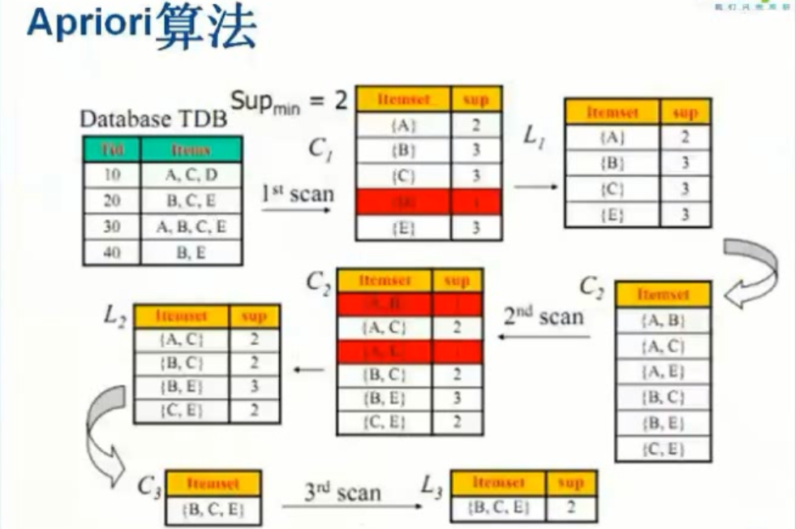
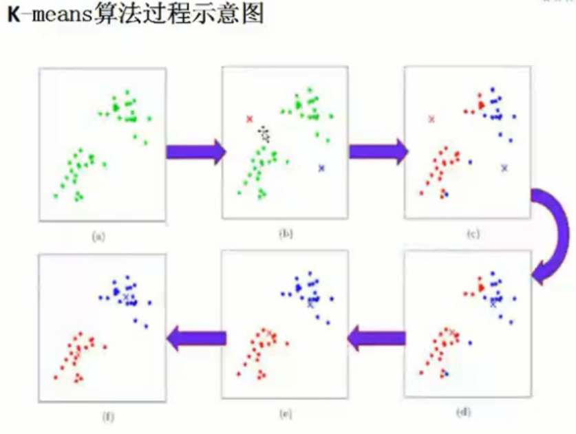
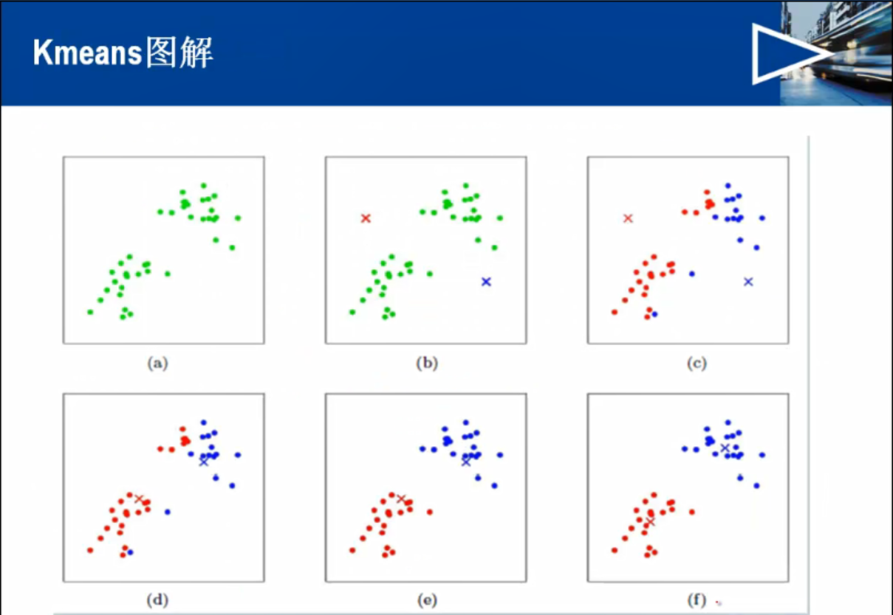
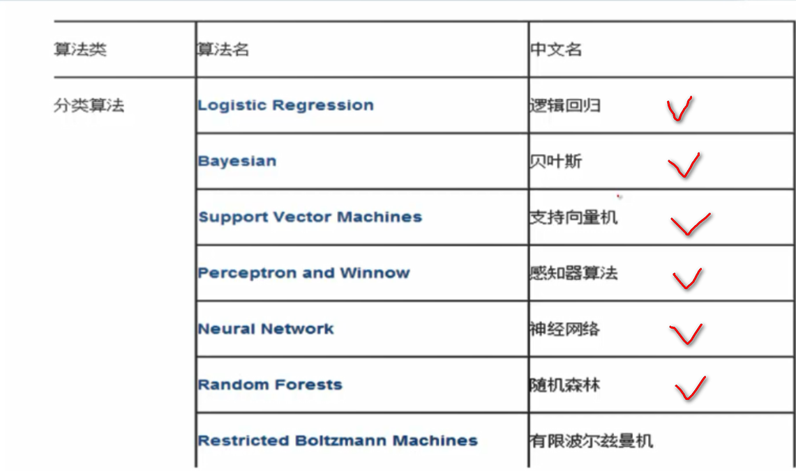
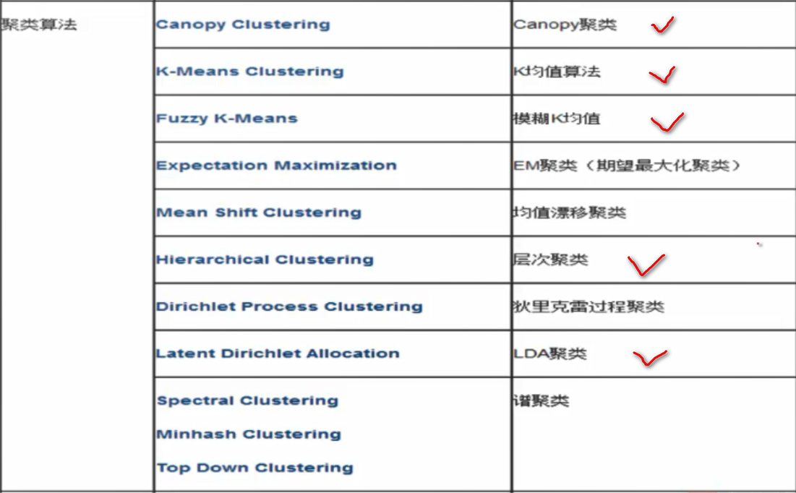
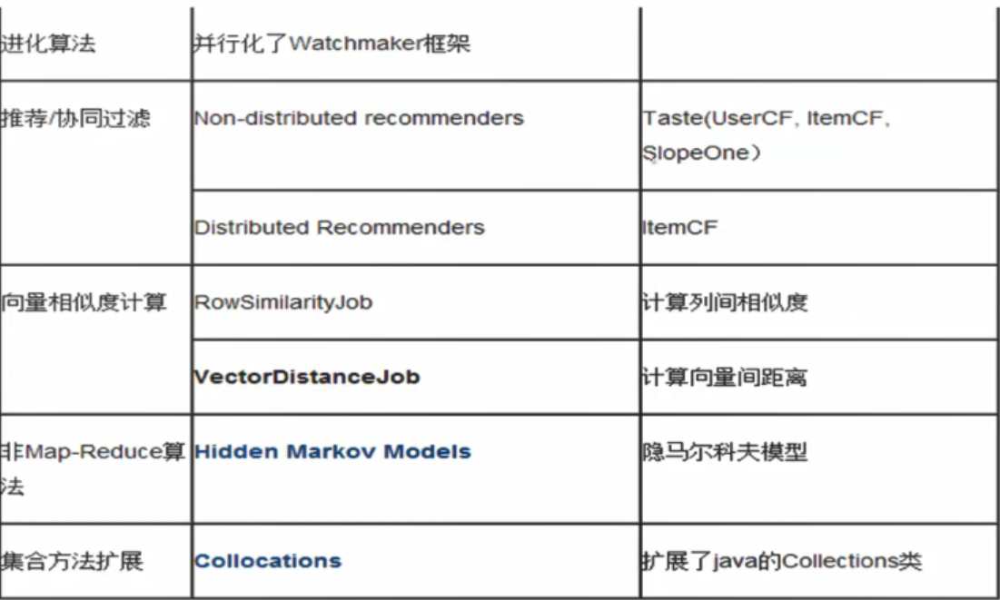
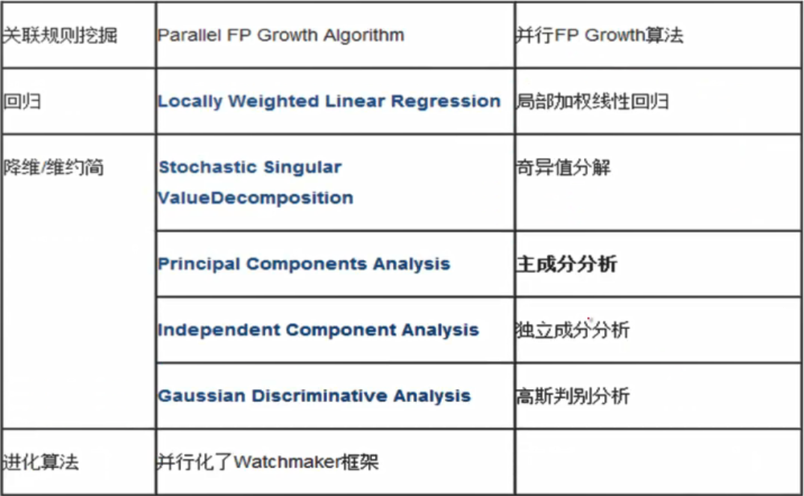

一、mahout讲解
1）基础知识：
主要分为三大类：聚类，分类，协同过滤
必须要依赖于hadoop
1.运行一个mahout实例（运行Kmeans算法）
1）启动hadoop集群
./start-all.sh
2）创建测试目录testdata，并将数据文件synthetic_control.data导入testdata目录中(目录名字必须是testdata)
hadoop fs -mkdir testdata #
hadoop fs -put /opt/mahout-distribution-0.7/synthetic_control.datatestdata
3）运行Kmeans算法
Hadoop jar /opt/mahout-distribution-0.7/mahout-examples-0.7-job.jar org.apache.mahout.clustering.synctheticcontrol.kmeans.job
2.聚类算法（）
3.分类算法（[预先定义好类别，且类别数目不变]）
4.协同过滤推荐算法
二、Kmeans算法
1）基础知识：
1.查看Kmeans运行结果
将sequencefile文件转换成刻度的文本格式
./mahout seqdumper -s output/clusters-5/part-r-00000 -o /home/jayliu/part-1
cat part-1|more
2.下载mahout源码包
3.算法思想
以空间中k个点为中心进行聚类，对最靠近他们的对象进行归类，
通过迭代的方法，主次更新各聚类中心的值，直至得到最好的聚类结果
4.算法的优势和核心
优势：简介，快速
核心：在于出市中心的选择和距离公式
5.Kmeans的步骤和图解
执行步骤：
1）在未聚类的n个初始点集合中随机选取两个点作为聚类中心
2）计算每个点到聚类中心的距离，并聚集到离该点最近的聚类中去
3）计算每个聚类中所有点的坐标平均值，并将这个平均值作为新的聚类中心
4）利用②③的迭代法更新后，值保持不变，则迭代结束，否则继续迭代
参数调节：
迭代的最大次数/收敛值
三、canopy算法
1）基础知识：
注：(Kmeans算法依赖于canopy算法)[主要是选择合适的点]
1.参数注意
当T1过大时，会使许多点属于多个canopy，可能会造成簇的中心店间距离较近，各簇间区别不明显
当T2过大时，增强强标记数据点的数量，会减少簇个个数，T2过小，会增加簇的个数，同事增加计算时间
2.算法流程
遍历给定点集S，设置两个阈值，T1,T2(T1>T2)，选择一个点，用低成本算法计算它与其他canopy中心距离
如果距离小于T1则将该点加入那个canopy，如果距离小于T2则该点不会成为某个canopy的中心，重复该过程
直到S为空
3.注意事项
1）首先是轻量距离度的选择，是选择数据模型其中的一个属性
还是其他外部属性这对canopy的分布最为重要
2）T1，T2的取值影响到canopy重叠率f，以及canopy的粒度
3）canopy有消除孤立点的作用，K-means却不能，建立canipy后
可以删除那些包含数据点数目比较少的canopy，往往这些
canopy是包含孤立点的
4）根据canopy内点的数目，来决定聚类中心数目k，这样效果比较好
四、朴素贝叶斯算法
1）基础知识：
注：（决策分类，文档分类）
1）决策分析
a）先计算训练数据的分类概率
b）计算影响属性值/(Y/N)的分别概率
c）概率计算：Y=所有属性Y相乘 N=所有属性N相乘
d）如果计算结果P(N)>P(Y)->N
2）文本分类
a）有监督学习(事先有训练数据，和预期结果)
b）朴素贝叶斯分类器是一种有监督学习，常见的模型(多项式模型/伯努利模型)
3）多项式模型和伯努利模型
1.训练数据
id doc 类别
1 chinese beijing chinese yes
2 chinese chinese shanghai yes
3 chinese macao yes
4 tokyo japan chinese no
2.验证数据
chinese chinese chinese tokyo japan
2.多项式模型步骤
1）yes下共有8个单词，no下3个单词，样本单词共11，p(yes)=8/11 p(no)=3/11
2）p(chinese|yes)=(5+1)/(8+6)=3/7
p(japan|yes)=p(tokyo|yes)=(0+1)/(8+6)=1/14
p(chinese|no)=(1+1)/(3+6)=2/9
p(japan|no)=(1+1)/(3+6)=2/9
注释：分母8：训练样本的单词总数
分母6：训练样本共6个单词
分母3：no类共3个单词
3）p(yes|d)=(3/7)^3*1/14*1/14*8/11=108/184877==0.00058417
p(no|d)=(2/9)^3*2/9*2/9*3/11=32/216531==0.00014780
结果，该文档属于china
3.伯努利模型步骤
1）类yes下总共有3个文件，类no下有一个文件，训练文件总数4，p(yes)=3/4
2）p(chinese|yes)=(3+1)/(3+2)=4/5
p(japan|yes)=p(tohyo|yes)=(0+1)/(3+2)=1/5
p(beijing|yes)=p(macao|yes)=p(shanghai|yes)=(1+1)/(3+2)=2/5
p(chinese|no)=(1+1)/(1+2)=2/3
p(japan|no)=p(tokyo|no)=(1+1)/(1+2)=2/3
p(beijing|no)=p(macao|no)=p(shanghai|no)=(0+1)/(1+2)=1/3
3）p(yes|d)=p(yes)*p(chinese|yes)*p(japan|yes)*p(tokyo|yes)*(1-p(beijing|yes))*(1-p(shanghai|yes))*(1-p(macao|yes))
p(no|d)=1/4*2/3*2/3*2/3*(1-1/3)*(1-1/3)*(1-1/3)=16/729==0.022
因此这个文档不属于类别china
4）模型区别
1.二者计算粒度不一样，多项式模型以单词为粒度，伯努利以文件为粒度
因此二者的先验概率和类条件概率的计算方法都不同
2.计算后验概率时,对于一个文档d，多项式模型中，只有在d中出现过的单词
才会参与后验概率计算，伯努利模型中，没有在d中出现，但是在全局单词表
中出现的单词也会参与计算，不过是作为反方参与
3.多项式模型适合小数据量精准计算，伯努利模型适合大数据量精准度可能待考虑
朴素贝叶斯java实现
1）实现包括三部分：训练器，模型，分类器
五、taste框架
1）基础知识：
taste框架/基于用户,商品,slope one的推荐器
1）基于用户推荐
用户a喜欢：商品a 商品c
用户b喜欢：商品b
用户c喜欢：商品a 商品b 商品c
->用户a和用户c相似，将商品b推荐给用户a
--java实现
2）基于商品推荐
(占位角度不同)
六、推荐系统小结
1）基础知识：
1）应用场景
qq好友推荐，爱奇艺视频推荐，豆瓣音乐推荐，点评餐饮推荐，世纪佳缘相亲推荐，智联招聘置业推荐
2）数据源
搜索关键字，网站埋点日志信息，物品信息(关键字)，用户信息(性别，年龄)，用户对物品的喜好(评分，查看，购买)
3）apriori算法(购物车分析/关联分析)
目的：寻找购物车中物品的组合
支持度：商品组合购买次数/总购买次数
可信度：购买第一个后会继续购买第二个/购买第一个商品次数
术语：由关联规则->找出频繁项集
先验性质：频繁项集的所有非空子集也一定频繁的
逆否命题：若一个项集是非频繁的，则它的任何超集也是非频繁的
4）协同过滤推荐技术
基于用户的推荐技术(用户购买历史)
评分，投票，转发，保存书签，标记书签，评论，点击流，查看，购买，页面停留时间
基于商品的推荐技术(商品的相似性)
5）相似度计算
欧氏距离相似度
皮尔森相似度
余弦相似度
秩相关系数相似度
曼哈顿距离相似度
对数似然相似度
6）术语
数据减噪：某一列中的数值特别大即为噪音数据
数据归一化：当某两列数据差值在几个数量级上，会造成其他列忽略不计，此时将该列缩小倍数等
7）贝叶斯决策
先验概率：在没有对样本进行任何观测情况下的概率(瞎猜的)
后验概率：有依据(重量)的猜测
最小错误率：按照自己感觉对的答案猜测，这样错误率较小
最小风险：后验概率后结果有可能不正确，通过风险来帮助做出正确判断
主要应用于文本分类
8）fpgrowth算法
改进apriori算法：减少数据库扫描次数，减少候选集数量，简化支持度计算
构建数据树：
1.计算每个商品的频数，删除频数小于设置的最小支持度的商品
2.对获取商品重新排序
3.其次对每一条记录进行二叉树的添加展示
4.指定终点，寻找路径，列举具体路径
5.将值设置为终点节点的次数
6.将终点节点去掉，获取最终的：条件模式基
决策树(相亲案例)
熵：表实不确定性的度量，熵值越大，随机变量的不确定性越大
条件熵：随着条件的变化，熵的值随之变化
信息增益：过多的特性信息提取，会导致结果不确定性的减小
1）id3算法
步骤：
1.计算某一个特征的熵
2.计算某一个特征的条件熵
3.按照条件熵最大的作为节点
4.去掉该条件为Y的数据，再进行其他条件的条件熵计算
5.最后构建决策树
缺点：过拟合(结果决策不准确),分的太细，考虑条件太多
2)c4.5算法
相比较id3算法
1）用信息增益比来选择属性
2）在决策树的构造中对树进行剪枝
3）对非离散数据也能处理
4）能够对不完整数据进行处理
线性回归(年龄和身高关系/面积和房价)
特征：影响因素(房屋面积，朝向，所在小区，房间个数等)
y = @x (确定@，即可以确定直线)
并不是所有的点都会在直线上面，所以会有估计值和实际值
计算估计值和实际值之差：
损失函数(数学公式：最小二乘法)
梯度下降法(迭代法)：
梯度：函数与一条切线产生的斜率(导数)
随机梯度下降法(SGD：每次迭代只会带入单个样本，进行迭代计算)
K-means算法：
K-means算法计算距离，常用的算法是：欧氏距离
算法思想：
1）随机选取K个点作为初始的聚类中心
2）当任意一个点分配结果发生改变时
3）对数据集中的每一个数据点
4）对每一个聚类中心计算中心与数据点的距离
5）将数据点分配到距离最近的簇
6）对每一个簇，计算簇中所有点的均值作为聚类中心
K-means算法不支持非凸数据集
K-means算法改进
1）对K的选择可以用一些算法选择合适的K
2）二分K均值算法
3）谱聚类算法，很好解决非凸数据集聚类
爬虫
垂直网站爬虫与全网爬虫
七、涉及算法图示
1）所下所示：






